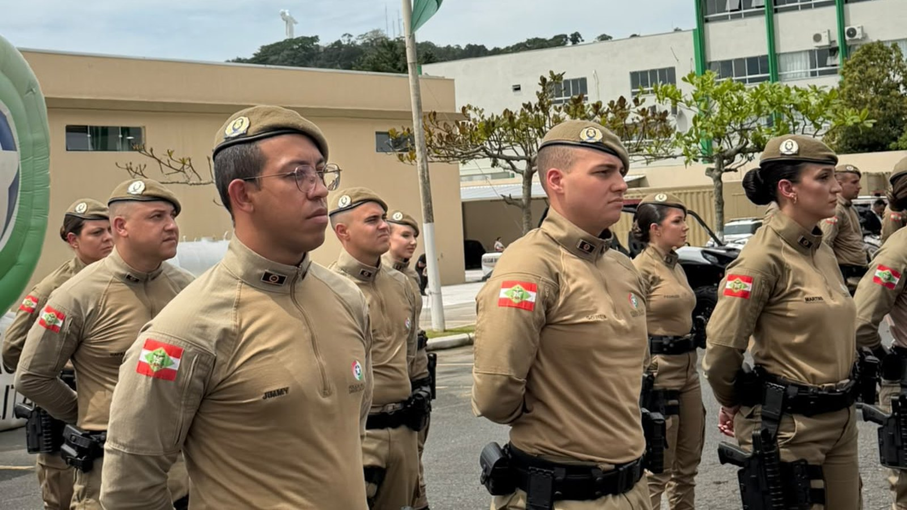
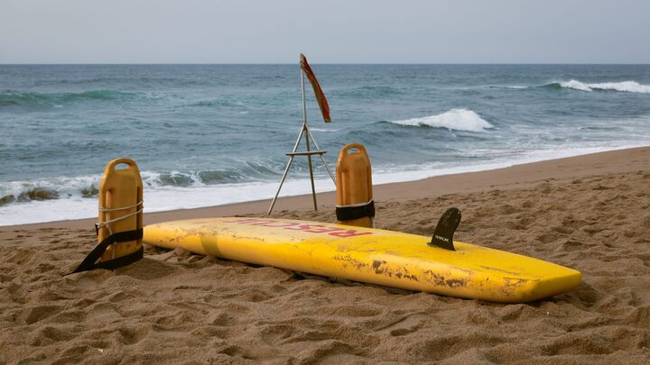

Itapema fechou mais R$ 63.280 em espargidor de pimenta e projétil de borracha para a Guarda Municipal, e é a segunda compra do tipo em 2026
O que a cidade comprou para a Guarda em 2026.
A Prefeitura de Itapema informou nesta sexta-feira que dez dos 78 formados no 12º Batalhão de Polícia Militar, em Balneário Camboriú, vão para o 31º Batalhão, responsável pela cidade. Em todo o estado foram 948. Fomos ler a lei que criou esse posto, a Lei Complementar 880, de agosto de 2025: o contrato é de 12 meses e o artigo 28 veda ao temporário o policiamento ostensivo com viatura, motocicleta ou montado. A nota não diz em que função os dez vão ficar.
Em 30 segundos · Modo de Leitura, formato original Santa Informa
Itapema vai receber dez policiais militares.
A Prefeitura informou nesta sexta-feira, 9 de outubro.
Eles são soldados temporários.
Formaram-se no 12º Batalhão, em Balneário Camboriú.
Na solenidade concluíram o curso 78 pessoas.
Em todo o estado foram 948.
Os dez vão para o 31º Batalhão.
É o batalhão que atende Itapema.
Dez de 948 dá 1,05% do total do estado.
Itapema tem 88.842 moradores.
Santa Catarina tem 8.312.759.
Ou seja, 1,07% da população.
As duas contas são nossas, sobre dados do IBGE.
Fomos ler a lei que criou o posto.
É a Lei Complementar 880, de agosto de 2025.
Ela criou o SEMET, o serviço militar temporário.
O contrato dura 12 meses.
Pode ser prorrogado por igual período.
O teto é de 96 meses somados.
O artigo 28 lista o que o temporário não faz.
Nada de patrulha com viatura, moto ou a cavalo.
Nada de inteligência nem de planejar operação.
O artigo 4º explica para que serve o posto.
Um dos objetivos é liberar o policial de carreira.
Liberar do serviço interno e da guarda do quartel.
A nota não diz em que função os dez vão ficar.
Nem quando eles começam em Itapema.
Em julho a PM escreveu à Assembleia sobre o curso.
Falou em cerca de mil em formação.
E disse que a divisão seguiria critérios técnicos.
Déficit de efetivo, demanda e índice de criminalidade.
População não está nessa lista.
Poder PúblicoPublicada em Redação Santa Informa

Itapema vai receber dez novos policiais militares temporários. A Prefeitura informou nesta sexta-feira, 9 de outubro, que eles estão entre os 78 profissionais que concluíram o Curso Básico de Formação em solenidade no 12º Batalhão de Polícia Militar, em Balneário Camboriú, e que vão para o 31º Batalhão, responsável pelo atendimento em Itapema. Em todo o estado, segundo a mesma nota, 948 concluíram o curso. Fomos ler a lei que criou esse posto, a Lei Complementar 880, de 5 de agosto de 2025: o artigo 28 proíbe o militar temporário de "atuar em serviços de policiamento ostensivo com uso de viatura, motocicleta ou montado e especial". A nota da Prefeitura não diz em que função os dez vão ficar.
Os dez de Itapema são 1,05% dos 948 formados no estado. A cidade tem 88.842 moradores na estimativa de 2026 do IBGE, e Santa Catarina tem 8.312.759, o que dá 1,07%. As duas contas são nossas, feitas sobre a tabela 6579 do IBGE. Na solenidade de Balneário Camboriú a fatia é bem maior: dez de 78, ou 12,8%. Em julho, respondendo a uma indicação na Assembleia, o comandante-geral da Polícia Militar, coronel Emerson Fernandes, escreveu que a distribuição desses novos policiais ia observar "critérios técnicos, considerando o déficit de efetivo, as demandas operacionais, os indicadores de criminalidade e as necessidades específicas de cada região". População não está nessa lista, e a nota desta sexta não diz qual critério trouxe os dez para cá.
A lei criou o Serviço Militar Estadual Temporário, o SEMET. Pelo artigo 26, o contrato dura 12 meses, pode ser prorrogado por igual período e não passa de 96 meses de serviço somados. A renovação depende de pedido com 60 dias de antecedência e de interesse da corporação. O artigo 28 traz as vedações: além da patrulha com viatura, moto ou a cavalo, o temporário não entra em setores de inteligência nem na organização de operações policiais. Já o artigo 4º diz para que serve o posto, e um dos objetivos é substituir o policial de carreira escalado para serviço interno e guarda de quartel. Foi esse curso que o comandante-geral descreveu em julho como em andamento com "aproximadamente 1.000" soldados. Formaram-se 948, cerca de 50 a menos, e como o número de julho é aproximado a diferença também é.
A nota liga o anúncio ao trabalho da Guarda Municipal, que é da cidade e não se confunde com a Polícia Militar, que é do estado. Contamos aqui os dois movimentos recentes dela: em 8 de outubro a Prefeitura fechou R$ 63.280 em espargidor de pimenta e projétil de borracha, a segunda compra do tipo em 2026, e em setembro ela registrou 729 atendimentos, abaixo da média de 2025. Os dez policiais militares saem de outra folha, a do estado, e chegam antes da temporada.
O resumo de 30 segundos está no topo e a versão completa é o texto acima. Aqui ficam as três leituras da casa sobre o mesmo assunto.
Clara, a otimista
Dez pessoas a mais de farda no batalhão que atende Itapema, chegando antes do verão, é notícia boa de ler. E tem uma coisa na lei que pouca gente percebeu: um dos objetivos declarados do serviço temporário é tirar o policial de carreira do balcão e da guarda do quartel. Cada temporário que assume um posto interno é um experiente que volta para a função dele. O reforço pode render mais do que o número sugere.
Vale lembrar também o outro lado da moeda, o de quem veste a farda. São 948 pessoas em Santa Catarina que fizeram um curso, foram aprovadas e começam com carteira e treinamento. A lei ainda permite que o temporário tenha outro trabalho remunerado, o que ajuda quem está começando. Para uma cidade que vive de temporada, gente formada e empregada antes do verão é sempre um bom começo.
Seu Prudêncio, o criterioso
Merece atenção o que a nota não diz. Ela anuncia dez policiais e para por aí: não traz a data de incorporação, não traz a função e não traz o tamanho atual do efetivo do 31º Batalhão. Sem essas três informações, o leitor não consegue medir o reforço. Dez em um batalhão pequeno é muito; dez em um batalhão grande é pouco. A conta é simples e os números existem, só não foram publicados.
O prazo também vale acompanhar. O contrato do temporário é de doze meses, contados da incorporação, prorrogáveis por igual período, e a prorrogação não é garantida: depende de pedido com sessenta dias de antecedência e de interesse da corporação. Quem planeja segurança de temporada precisa saber se esse reforço chega até março ou se vai embora no meio do caminho. Uma sugestão útil é o batalhão publicar a data de início e a escala, do jeito que a Prefeitura publica o calendário da Guarda.
Dito isso, o movimento é bom e o estado fez a parte dele. Botar quase mil pessoas em um curso de formação e entregá-las em outubro, antes da alta estação, é planejamento que funcionou. E o ofício de julho, com a lista de critérios técnicos, já estava público antes da formatura, o que é mais transparência do que costuma haver nesse assunto.
Caco, o sarcástico
Itapema ficou com 1,05% dos novos policiais do estado e tem 1,07% da população. Se a conta foi proposital, alguém da corporação tem uma planilha muito bem feita. Se foi coincidência, é a coincidência mais bem comportada do ano.
Reclamação registrada: li a lei inteira para descobrir que o reforço não pode andar de viatura, não pode andar de moto e não pode andar a cavalo. Sobrou o pé, que, convenhamos, é como a maioria de nós se locomove pela Meia Praia em janeiro mesmo.
Mas tá bom porque é mais gente. Dez pessoas treinadas chegando antes do verão numa cidade que triplica de tamanho é daquelas reclamações que a gente faz de barriga cheia.
Fontes: os dez policiais destinados a Itapema, os 78 formados na solenidade do 12º Batalhão de Polícia Militar em Balneário Camboriú, os 948 formados em todo o estado e a informação de que o 31º Batalhão atende Itapema estão na nota Itapema recebe reforço de dez novos policiais militares, publicada pela Prefeitura de Itapema em 9 de outubro de 2026 e lida por nós no mesmo dia. A duração de 12 meses do contrato, o teto de 96 meses, o prazo de 60 dias para pedir prorrogação, as vedações do artigo 28 e os objetivos do artigo 4º estão no texto da Lei Complementar nº 880, de 5 de agosto de 2025, lido por nós no portal de legislação da Assembleia Legislativa de Santa Catarina em 9 de outubro. A frase sobre os critérios técnicos de distribuição e o número de aproximadamente mil soldados em formação estão no Ofício nº 56566/PMSC/2026, assinado pelo comandante-geral da Polícia Militar, coronel Emerson Fernandes, em resposta à Indicação nº 0548/2026 do deputado Mauro de Nadal e encaminhado à Assembleia em 21 de julho de 2026. As populações de Itapema e de Santa Catarina em 2026 são a estimativa do IBGE na tabela 6579 do Sidra, consultada por nós em 9 de outubro. Os R$ 63.280 em equipamento da Guarda Municipal estão na nossa matéria de 8 de outubro, e os 729 atendimentos de setembro na nossa matéria de 3 de outubro. Os percentuais de 1,05%, 1,07% e 12,8% e a diferença de cerca de 50 entre o curso e a formatura são contas nossas.
O que a cidade comprou para a Guarda em 2026.
O tamanho do trabalho da Guarda, mês a mês.

Costa Esmeralda · SegurançaO outro preparo da cidade para a temporada.